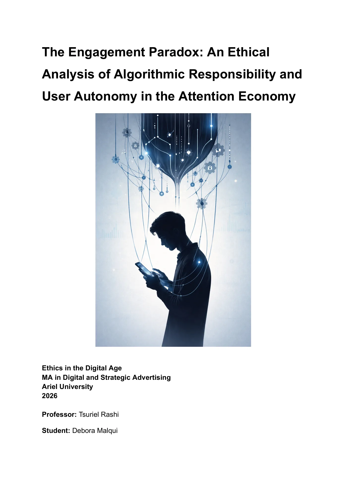

«The Engagement Paradox»: quién responde por los algoritmos que eligen qué vemos
Un ensayo individual para la materia de ética en la era digital. La tesis: la fragmentación social que producen las plataformas no es una falla de diseño ni un vacío legal, es un dilema ético: priorizar el engagement emocional sobre la cohesión social. Lo analicé con el método del Potter Box y propuse una salida desde la responsabilidad profesional.
La tesis
La literatura suele tratar la polarización en redes como un problema de diseño o de regulación. El ensayo sostiene otra cosa: el núcleo es ético. Las plataformas eligen la emoción que retiene por sobre la cohesión que sostiene a una sociedad, y esa elección se protege con la indiferencia (Wiesel), con una «política del borrado» (Bastos) y con la opacidad técnica de los sistemas (Binns).
El método: cinco pasos del Potter Box
- 1 · Hechos
Qué hacen hoy los algoritmos de recomendación y qué se borra para que nadie lo revise.
- 2 · Valores
Engagement medido en clics contra cohesión social. El conflicto como producto rentable.
- 3 · Principios
Kant: autonomía, imperativo categórico y «atrevete a saber». La indiferencia como ley universal no se sostiene.
- 4 · Lealtades
A quién responde quien diseña el sistema: a la empresa que paga o a la sociedad que lo usa.
- 5 · Decisión
Auditar el sesgo antes de publicar, como obligación profesional, para que el usuario recupere su criterio.
El Potter Box es un método de análisis ético: se recorre en este orden, y la decisión final tiene que poder defenderse desde los cuatro pasos anteriores.
Lo que dice cada paso
Hechos. Según las fuentes citadas, el contenido con carga emocional alta (indignación, conflicto) tiene un 90 % más de probabilidad de difundirse que el neutral, y alrededor del 70 % del tiempo de visionado en video y redes lo deciden las recomendaciones automáticas. A eso se suma la «política del borrado»: quitar el contexto, silenciar voces disidentes con denuncias masivas y limpiar las huellas una vez que el daño ya rindió.
Valores. La eficiencia del engagement contra la cohesión social. Para la industria, el desorden social no es un error de código: es la señal de que el sistema de atención rinde al máximo. Y la indiferencia opera en dos niveles: la técnica (un algoritmo ciego a la verdad que radicaliza el sesgo) y la moral (empresas para las que la pérdida de empatía cívica es un indicador de retención).
Principios. Ese modelo ataca la autonomía kantiana: si el algoritmo fragmenta la visión del mundo hasta que el otro desaparece como interlocutor, anula la capacidad de razonar en universal. Una sociedad con la indiferencia como ley universal colapsa, y el usuario queda en «minoría de edad», lejos del «atrevete a saber».
Lealtades. ¿A quién responde quien diseña estos sistemas? Siguiendo a Kasher, un profesional no es solo un empleado que obedece: custodia un estándar que protege la dignidad humana. El desarrollador vive una disonancia entre la lealtad contractual (optimizar el sesgo para ganar más) y la lealtad ética (preservar el orden público y la salud mental). Y como el diseño algorítmico nunca es neutral (Martin), quien lo diseña es responsable del daño.
Decisión. Un cambio de paradigma en la responsabilidad profesional: internalizar el estándar IEEE 7003-2024 sobre sesgo algorítmico no como sugerencia sino como obligación moral, y auditar los sesgos que fracturan el orden público antes de implementar. Solo cuando el sistema deja de manipular la percepción, el usuario recupera su soberanía de juicio.
Las fuentes
Bastos (2024) sobre la política del borrado; Binns (2018) sobre rendición de cuentas algorítmica; Gombar (2025) sobre cámaras de eco; el estándar IEEE 7003-2024; Kant (1784) sobre la Ilustración; Kasher (2005) sobre ética profesional; Martin (2018) sobre la responsabilidad de los algoritmos; Unver (2017) sobre la economía de la atención; Wiesel (1999) sobre los peligros de la indiferencia.
Cómo se escribió
El ensayo lleva una declaración de uso de IA. Yo puse los ejes temáticos, las fuentes y la estructura bajo el Potter Box; la IA ayudó a sintetizar conceptos y a afinar la prosa académica, y generó la imagen de portada. Cada argumento y cada término lo revisé y lo validé yo. Es la misma forma en la que trabajo hoy: la IA ejecuta, el criterio es mío.
